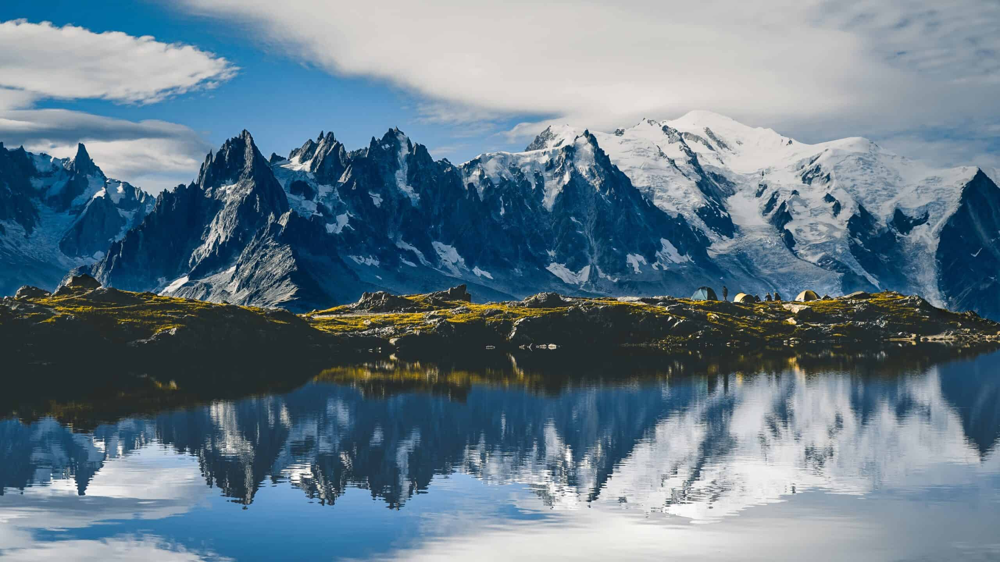

Exploring the Alps
The Alps are one of the great mountain ranges of Europe, stretching across eight countries: Austria, France, Germany, Italy, Liechtenstein, Monaco, Slovenia, and Switzerland. The range is home to some of the most beautiful and dramatic scenery on the continent.
During my visit, I explored quaint alpine villages, trekked through stunning trails, and enjoyed the local cuisine. The breathtaking views from the peaks and the serene beauty of the valleys were unforgettable.
Discovering Tokyo

Tokyo, the bustling capital of Japan, is a city that blends tradition and modernity seamlessly. From ancient temples and shrines to towering skyscrapers and cutting-edge technology, Tokyo has something for everyone.
Highlights of my trip included visiting the historic Senso-ji Temple, exploring the trendy Shibuya and Harajuku districts, and indulging in delicious sushi at Tsukiji Market. The city's vibrant culture and energetic vibe made it an unforgettable destination.
Adventures in the Amazon

The Amazon Rainforest, often referred to as the lungs of the Earth, is a vast and mysterious region filled with incredible biodiversity. My adventure through this lush jungle was both thrilling and enlightening.
I encountered exotic wildlife, navigated winding rivers, and learned about the unique flora and fauna from knowledgeable guides. The Amazon's beauty and complexity left a lasting impression on me.